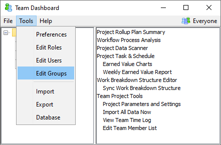

The Team Project Plan Summary is a very useful tool for tracking team progress. You can open the team plan summary by opening the Team Dashboard, selecting your team project, and choosing the "Rollup Plan Summary" option from the list on the right. The Team Rollup Plan Summary contains earned value reports for the project, quality reports and charts, and reports of overall project metrics.
The Team Rollup Plan Summary can be very helpful in weekly team meetings. There are two easy ways to view the reports during that meeting. First, you can install the Team Dashboard on a laptop computer, take that computer into the conference room for your meeting, and open the various rollup reports. Or, you can install the Quick Launcher on a computer in the conference room, bring in a data backup that you've saved from your Team Dashboard, and open that data backup in the Quick Launcher.
Also, remember that the Project Plan Summary is editable. If you don't find a particular metric or chart on your report, put the report into editing mode and add it. If you don't find the metric you're looking for in the list of provided items, please contact the Process Dashboard development team. We're always open to suggestions on how to make the dashboard better!
The Team Rollup Plan Summary includes earned value reports for the project. These reports roll up the individual earned value plans owned by each team member into a single earned value plan for the entire team.
Near the top of the team earned value report, you will find a Show Weekly View hyperlink. Clicking this hyperlink will display a chronological cross section of the project schedule that summarizes the accomplishments of the previous week and lists the tasks scheduled to be completed in the coming week. This is very useful in the weekly team meeting. For monitoring and status reporting on longer projects, a monthly view is also available.
Once the team has collected a minimum amount of earned value data, these earned value reports will include forecasts for overall project cost and completion date. You will notice that the team earned value plan typically includes two different forecasts for the project completion date.
Practically speaking, it is rarely possible to keep the workload perfectly balanced, so a realistic forecast completion date would fall between the two dates provided above. When the two forecast dates differ significantly, the project workload is unbalanced and tasks likely need to be reassigned.
At times, you may need to drill down into the earned value schedule for a particular team member. To do this, open Team Dashboard window and select Task and Schedule from the File menu. Open the schedule for the team project. If you highlight the sub-schedule for a particular individual, you can choose "Filtered Chart" or "Filtered Report" from the "View" menu to see graphical, statistical, and printable views of that individual's earned value plan.
High-maturity project teams collect a lot of data. This data can be very valuable for project tracking, analysis, and process improvement; but at times, the sheer volume of data can be difficult to sift through. The Project Data Scanner report aims to help with this task.
The Project Data Scanner report analyzes team project data to look for common problems and highlight opportunties for improvement. Coaches, team leaders, and quality coordinators can use this report to gain insight into the project and to identify data problems.
When the Project Data Scanner report identifies potential data problems, it displays them in a list for review. The coach, team leader or quality manager can look over these lists periodically. When a particular finding has been reviewed and handled, the responsible individual can mark the checkbox on that line to clear the item from the report.
In the current release of the dashboard, the Project Data Scanner report includes several useful analyses; but many more are possible. If you have an idea for a new process data check, send a suggestion to the Process Dashboard development team so it can be added in a future release.
Although the project planning summary allows you to drill down into subcomponents in your team plan, sometimes you will have a need to analyze a subset of data that slices across those hierarchical boundaries. To support this need, the dashboard has a powerful feature for analyzing arbitrary subsets of team data based on keywords called "labels."
Labels can be associated with tasks using the Work Breakdown Structure editor. During the team launch, you may not wish to spend the entire team's time entering these labels. But after the launch is complete, you might want to open the WBS and attach keywords to various tasks. This can be done by entering values in the "Task Labels" column on the "Task Details" tab. Each task can have any number of labels, separated by commas or spaces. Tasks will inherit the labels of their WBS parent unless you request otherwise.
If you use labels extensively, you may find that the Labels column becomes cluttered with keywords for many different categories. In this case, it is wise to create custom columns for each independent categorization. As you define the custom column, check the box to "Show values as labels in team reports." This will allow you to filter team charts and reports based on the values in the column. When you use this approach, the Labels column can be used primarily for one-off keywords.
After you edit labels and save the Work Breakdown Structure, you
can apply a label filter from any page of your Team Project Plan
Summary. To apply a label filter, click the filter icon that appears
at the top of the plan summary page ( ). A form will be displayed, prompting
you for the label filter expression you wish to use. The syntax of
this expression is similar to familiar search engines like Google; the
form includes an explanation of the syntax.
). A form will be displayed, prompting
you for the label filter expression you wish to use. The syntax of
this expression is similar to familiar search engines like Google; the
form includes an explanation of the syntax.
When you apply the label filter, all the metrics you see in your customized forms, charts, and reports will be filtered to include only the tasks that match your filter expression. In addition to the labels that you enter in the WBS, the filter expression can also include:
The people collaborating on a project can often be categorized in various ways. For example, you might have:
The Team Dashboard allows you to define arbitrary groups to describe these collections of people. To do this, choose "Edit Groups" from the "Tools" menu.

The group editor will appear, allowing you to add, copy, rename, and delete groups. If you highlight the name of a group on the left, you can select the individuals who should be included in the group on the right. The names on the right side are taken from the list of people who have joined projects in this Team Dashboard.

Once groups have been defined, you can filter your view of the Team Dashboard to show data pertaining to a given group. Just click the group selector that appears in the top right corner of the main Team Dashboard window. The tree will narrow to show projects that the given individuals are participating in. To remove the filter, click the group selector and choose "Everyone" (the default initial value).

After you select a group, that filter will be inherited by other windows and reports that you open. For example, if you open the Project Task & Schedule window, it will only show earned value data from people in the selected group. And if you open a report like the Project Plan Summary, the sums will only show data from people in the selected group. You can change the active filter dynamically by clicking the group selector at the top of a particular window or report. This can be extremely useful as a way to monitor project progress for a particular subteam, reporting unit, etc.
Group filters should not be used to view data for a single individual, since that would be a violation of TSP data privacy ethics. Accordingly, the Team Dashboard reports perform a check to see whether a given group filter would predominately display data for a single individual. If so, the data in the report will be censored to protect that individual's data privacy.